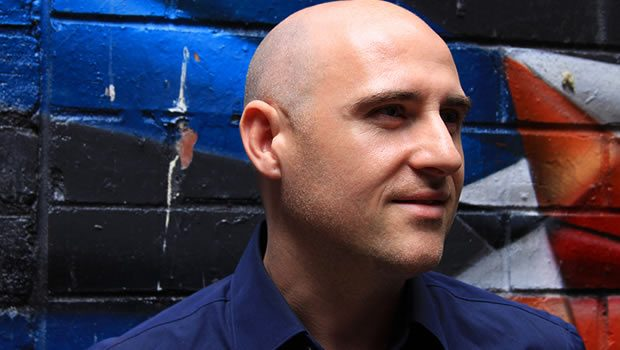

Vince Watson: A different kind of Serenity


You couldn’t accuse techno stalwart Vince Watson of being anything less than prolific, when looking at his recent output of both club records and albums. However, when it came to working on an album for Radio Slave’s experimental label, a different approach was required. Our man Angus finds out more, at the showcase of Watson’s ‘Serene’ album at Berlin’s Berghain.
It’s a Tuesday night at the revered cultural hotspot that is Berghain, and while the iconic (and somewhat menacing) entrance of the former powerstation is tonight free of the excruciating queue that typically stretches back to the road, an impressive crowd is nonetheless gathered at its more modest Kantine space around the corner. It’s a showcase for Radio Slave AKA Matt Edwards’ ‘Pyramids of Mars’ label, the experimental offshoot to his well-known Rekkids stable, and Edwards himself is performing alongside Tom Gandey, under their pair’s Matom alias; and each is keeping one eye on the other’s respective live equipment, as they warm the room.
Matom’s sounds are pleasingly melodic, bubbling out over relaxed broken beats that are far more subdued than any of the pounding 4/4 you’d typically hear next door on a Saturday night or Sunday morning; but nonetheless, there’s enough energy to keep the crowd swaying. The main act tonight though will be Glaswegian techno veteran Vincent Watson; he’s performing for the first time under his full name Vincent I. Watson, the alias he’s now reserved for music produced either in the ambient style or for film soundtracks; he’ll be showcasing his new album ‘Serene’, which Edwards had selected as the next major release on Pyramids of Mars.
Speaking earlier in the day, Watson said he’d been approached about the possibility around a year ago, and it happened to slot in perfectly with the ambient concoctions that had actually been percolating in his studio for years; though they were somewhat lying dormant.
“Some of the tracks I actually started working on five years ago, and the ideas where there,” he said. “I knew though there wasn’t anything I could do with them yet. They weren’t ready, and I wasn’t ready… but this turned out to be a really refreshing project to work on.”
Watson’s previous album, the well received Every Soul Needs a Guide, was released just a year ago, and part of a workman-like ethic that’s become increasingly necessary in the current climate, where club records are churned out and have a much shorter time in the sun, as our collective consciousness moves swiftly across social media towards the next big thing.
“Beyond the albums, I’ve worked on maybe 25 remixes over the past few years, half of which aren’t even out yet, and I’ve also done seven or eight singles for labels all over the place,” Watson says. “Production wise it’s been really busy, so it’s been great to just stop and do something else that I was really in the mood for. It was quite liberating.”
Consistent with the jazzy, broken beats that characterised Every Soul Needs a Guide, Watson’s new ambient adventure represented for him just another opportunity to take a step in another direction, and allowing him to be as versatile as possible.
Timing is everything, he says. “In the past I’ve tried to tackle projects, and it turned out I wasn’t ready for them. I’d actually given this a go once before, and spent a few months trying to make music, but it just wasn’t comfortable with it. I not sure whether it’s cause I wasn’t experienced enough… but making this kind of music is very different. You have to take a step back and take a different approach, and place things in the mix differently. The concept of time is just different, because there’s no format, no rigid intros or breakdowns; so you have to fill all the voids really, really deeply. Matt [Edwards] did eventually approach me last year about an album for Pyramids of Mars, and he’s someone who’s always supported my music.”
The final outcome is ‘Serene’, and it’s 60 minutes of gorgeous, beautifully realized and sonically dense synth lines and soundscapes, which wash up against each other, cascading beautifully in tempo and intensity, though never peaking far beyond the album’s shimmering, overarching energy. That’s until the title track ‘Serene’ at the halfway point, when a cascading piano riff starts to wonder in and out of the mix. It’s the album’s emotional peak, but it’s also a musical motif that could have been lifted out of any of Watson’s dancefloor-engineered club singles.
As it turns out, ‘Serene’ isn’t quite that different from Watson’s other work as you might think; what’s consistent is the melody and the warmth. One of his most memorable club singles in recent years was 2009’s A Very Different World, an emotive and passionate journey through melodic house flourishes, and timeless enough to earn a reappearance last year on Glaswegian colleague Funk D’Void’s entry into the Balance mix compilation series; and it’s this same otherworldly sense that Watson has also brought to his work in the ambient space.
“I guess I like to take people somewhere that they’re not,” he says. “If you take people on a bit of a trip, it’s something they can remember. If you play a piece of music that doesn’t grab that attention, it can be easily forgotten, so you’ve gotta try and give them something different.”
A defining trait of Serene is that while it’s experimental, it’s not difficult or obtuse. To the contrary, it’s an inviting and warm listen, eschewing any rough edges. “I could have gone down the path and been a little more bold, with lots of harsh sounds in there. But I wanted the darker parts of the album to be a little easier to listen to. That was deliberate, and it was the kind of depth of space that I wanted to work around, rather than the eerie, dark side of things.”
The crowd at Kantine that Tuesday night gets to hear all of those ambient, lovingly rendered soundscapes recreated live when he takes to the stage on that Tuesday evening; it’s one of his characteristic live performances performed exclusively on analogue equipment, which actually requires a workmanlike dedication to running back and forth between his machines, a look of intense concentration on his face. When two of the interlocking melodies clank out of key for just a minute at one point, it only emphasizes the fact he’s working on an old Roland SH-201.
Unlike Matom’s earlier performance, the set from Watson is practically beat free. This certainly requires a little more patience from the crowd; though that’s not out of step with a label like Pyramids of Mars, which seeks to showcase expeditions outside standard club music.